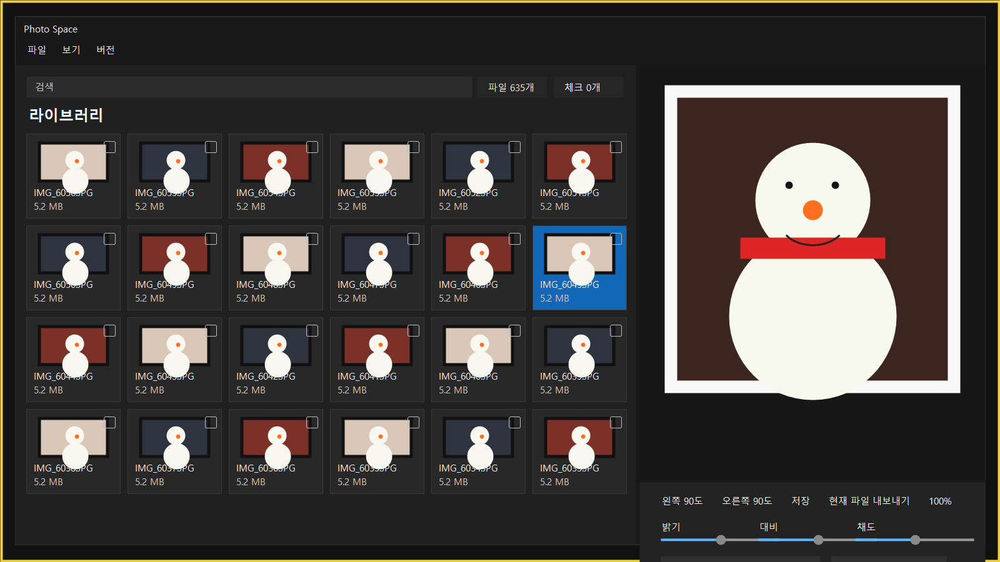

파일 또는 폴더를 불러오고, 파일명과 카메라 메타데이터 기준으로 검색합니다. 숨긴 사진은 기본적으로 제외하고, 필요할 때 숨김 항목 표시를 켤 수 있습니다.
Windows 사진 라이브러리 편집 도구
PhotoStudio
많은 사진을 한 화면에서 훑어보고, 필요한 항목만 체크해서 보정, 필터, 프레임, 리사이즈와 내보내기를 빠르게 처리합니다.
실제 작업 흐름이 보이는 화면
왼쪽은 사진 라이브러리와 체크 선택 영역, 오른쪽은 선택한 사진의 미리보기와 보정 패널입니다. 파일 수와 체크된 사진 수를 바로 확인하고, 현재 사진 또는 체크한 사진 묶음을 내보낼 수 있습니다.

코드에 들어있는 기능 기준으로 정리한 편집 기능
PhotoStudio는 단순 미리보기 앱이 아니라 선택한 사진의 편집 상태를 저장하고, 체크한 사진에는 별도의 일괄 편집 상태를 적용해 내보내는 구조입니다.
각 사진 카드 오른쪽 위 체크박스로 작업 대상을 고릅니다. 전체선택, Ctrl+A 토글, 체크 항목 해제, 체크 개수 표시를 지원합니다.
밝기, 대비, 채도 슬라이더를 조정하고 선명도 값을 적용합니다. 회전은 왼쪽 90도와 오른쪽 90도를 지원합니다.
없음, 1번 로즈 필름, 2번 노르딕 시안, 3번 에어리 그린, 4번 블라썸 핑크, 5번 아리 헬리오스, 6번 디즈니 프리셋을 선택할 수 있습니다.
인화 프레임, 따뜻한 인화, 맑은 인화, 자연 인화 프레임을 고르고 색상, 두께, 그림자, 텍스트 위치, 워터마크를 조정합니다.
가로·세로 픽셀을 직접 입력하고 비율 유지 옵션으로 자동 계산합니다. 현재 파일 또는 체크한 파일을 선택한 폴더로 저장합니다.
셀렉트 기능으로 여러 장을 한 번에 처리
체크한 사진은 별도의 배치 값으로 관리됩니다. 현재 미리보기 사진의 보정값과 체크 사진의 보정값이 섞이지 않도록, 내보낼 때 각 사진에 맞는 편집 상태가 적용됩니다.
01
사진 체크
카드 체크박스로 여러 장을 선택하고 상단에서 체크된 개수를 확인합니다.
02
일괄 보정
체크 항목에 밝기, 대비, 채도 값을 한 번에 적용합니다.
03
필터·프레임·크기
체크 항목 필터, 프레임 종류, 리사이즈, 좌우 90도 회전을 묶음으로 적용합니다.
04
체크 항목 내보내기
프레임 포함 여부를 선택하고 진행률을 보면서 여러 장을 저장합니다.
PhotoStudio 설치하기
아래 버튼은 GitHub에 업로드된 PhotoStudioSetup-2.0.1.exe 설치 파일로 연결됩니다.